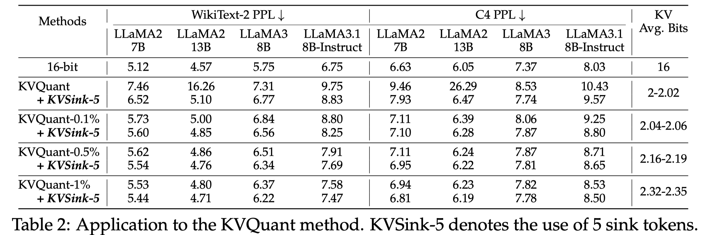

KVSink: Understanding and Enhancing the Preservation of Attention Sinks in KV Cache Quantization for LLMs
Zunhai Su, Kehong Yuan

Abstract
Key-Value (KV) cache quantization has become a widely adopted optimization technique for efficient large language models (LLMs) inference by reducing KV cache memory usage and mitigating memory-bound constraints. Recent studies have emphasized the importance of preserving the original precision of KVs for the first few tokens to ensure the protection of attention sinks. While this approach has proven effective in mitigating performance degradation, its underlying principles remain insufficiently understood. Moreover, it fails to address the recent discovery that attention sinks can emerge beyond the initial token positions. In this work, we elucidate the underlying mechanisms of attention sinks during inference by examining their role in the cross-layer evolution of extreme activation outliers. Additionally, we provide a comprehensive analysis of the interplay between attention sinks and KV cache quantization. Based on our enhanced understanding, we introduce \textit{\textbf{KVSink}}, a plug-and-play method that effectively predicts sink tokens with negligible overhead, enabling more thorough preservation. Extensive experiments demonstrate that KVSink outperforms the existing Preserve-First-N (PFN) strategy, offering more effective preservation of attention sinks during KV cache quantization. Moreover, when applied to the well-established KVQuant method, KVSink further improves perplexity (PPL) and reduces reliance on 16-bit numerical outliers.
KV Sink现象一般在前几个token，但实际情况也完全一样，本工作通过观察outlier的分布，并分析得到stable outlier，能够高效的预测Sink的位置，基于此进行混合位宽的量化。
